<title>Tres días de tester</title>
<meta name="claude:viewport-fit-sides" content="cover">
<link rel="preconnect" href="https://fonts.googleapis.com">
<link rel="preconnect" href="https://fonts.gstatic.com" crossorigin>
<link rel="stylesheet" href="https://fonts.googleapis.com/css2?family=EB+Garamond:ital,wght@0,400;0,500;1,400&family=Inter+Tight:wght@400;500;600&display=swap">
<style>
/* Una columna de papel y tinta, como las páginas de arreglos: arriba lo que más importa, después una tira
   de capturas por día (se desliza de lado) con lo que chirría debajo de cada una, y la tabla al final.
   Terracota = fallo, oliva = opinión, azul = solo se sabe en un móvil. */
:root{
  --paper:#F2EDE0;--card:#FBF8F1;
  --ink:#1F1C17;--ink-2:#4A453C;--ink-3:#77705F;
  --line:#C9C0A8;
  --olive:#3E5A3A;--olive-soft:rgba(62,90,58,.12);
  --terra:#A85E43;--terra-soft:rgba(168,94,67,.12);
  --sky:#396373;--sky-soft:rgba(95,138,155,.14);
  --display:'EB Garamond',Georgia,'Times New Roman',serif;
  --ui:'Inter Tight',system-ui,-apple-system,'Segoe UI',sans-serif;
}
@media (prefers-color-scheme: dark){:root:not([data-theme="light"]){
  --paper:#1d1a14;--card:#2c271f;--ink:#EDE5D3;--ink-2:#c0b49e;--ink-3:#B2A995;--line:#4d4536;
  --olive:#98B58B;--olive-soft:rgba(122,154,109,.16);--terra:#E8A98F;--terra-soft:rgba(232,169,143,.14);
  --sky:#8FB8C8;--sky-soft:rgba(113,156,174,.16);color-scheme:dark;
}}
:root[data-theme="dark"]{
  --paper:#1d1a14;--card:#2c271f;--ink:#EDE5D3;--ink-2:#c0b49e;--ink-3:#B2A995;--line:#4d4536;
  --olive:#98B58B;--olive-soft:rgba(122,154,109,.16);--terra:#E8A98F;--terra-soft:rgba(232,169,143,.14);
  --sky:#8FB8C8;--sky-soft:rgba(113,156,174,.16);color-scheme:dark;
}
*{box-sizing:border-box}
body{margin:0;background:var(--paper);color:var(--ink);font-family:var(--ui);font-size:16px;line-height:1.55;-webkit-text-size-adjust:100%}
main{max-width:880px;margin:0 auto;padding-left:max(16px,env(safe-area-inset-left,0px));padding-right:max(16px,env(safe-area-inset-right,0px));padding-block:40px 72px}
h1,h2,h3{font-family:var(--display);font-style:italic;font-weight:400;line-height:1.15;margin:0;text-wrap:balance}
h1{font-size:clamp(32px,6vw,44px)}
h2{font-size:clamp(23px,4vw,28px);margin:44px 0 10px;padding-top:22px;border-top:1px solid var(--line)}
h3{font-size:20px;margin:26px 0 6px}
p{margin:0 0 12px;color:var(--ink-2);max-width:68ch}
strong{color:var(--ink);font-weight:500}
code{font-size:13px}
.eyebrow{font-size:12px;letter-spacing:.14em;text-transform:uppercase;color:var(--ink-3);margin-bottom:10px}
.lead{font-family:var(--display);font-size:21px;color:var(--ink);max-width:62ch;margin-top:14px}
.nota{font-size:13px;color:var(--ink-3)}
/* Las cinco de arriba */
ol.top{list-style:none;padding:0;margin:16px 0 0;display:grid;gap:12px;counter-reset:top}
ol.top li{counter-increment:top;background:var(--card);border:1px solid var(--line);border-radius:10px;padding:12px 16px 12px 52px;position:relative;color:var(--ink-2);font-size:15px}
ol.top li::before{content:counter(top);position:absolute;left:16px;top:9px;font-family:var(--display);font-style:italic;font-size:26px;color:var(--terra);line-height:1}
ol.top li b{display:block;color:var(--ink);font-weight:500;font-size:16px;margin-bottom:2px}
/* Las marcas */
.t{display:inline-block;font-style:normal;font-size:11px;letter-spacing:.06em;text-transform:uppercase;padding:1px 7px;border-radius:999px;vertical-align:1px;white-space:nowrap}
.t.fallo{background:var(--terra-soft);color:var(--terra)}
.t.opinion{background:var(--olive-soft);color:var(--olive)}
.t.movil{background:var(--sky-soft);color:var(--sky)}
.t.bien{border:1px solid var(--line);color:var(--ink-3)}
.leyenda{display:flex;flex-wrap:wrap;gap:8px 16px;font-size:13px;color:var(--ink-3);margin:10px 0 0}
/* La tira de cada día: se desliza de lado, dentro de su caja */
.tira{display:flex;gap:14px;overflow-x:auto;scroll-snap-type:x proximity;padding:6px 2px 14px;margin:12px 0 4px;-webkit-overflow-scrolling:touch}
.tira figure{flex:0 0 200px;margin:0;scroll-snap-align:start;min-width:0}
.tira img{display:block;width:200px;max-width:100%;height:auto;aspect-ratio:360/740;object-fit:cover;object-position:top;border:1px solid var(--line);border-radius:8px;background:var(--card)}
.tira figure.bajo img{aspect-ratio:360/640}
.tira figcaption{font-size:13px;line-height:1.45;color:var(--ink-2);margin-top:7px}
.tira figcaption b{display:block;font-weight:500;color:var(--ink);font-size:13px}
.tira .solo{flex:0 0 200px;align-self:stretch;border:1px dashed var(--line);border-radius:8px;padding:14px;font-size:13px;color:var(--ink-2)}
.desliza{font-size:12px;color:var(--ink-3);margin:0}
/* Lo de los móviles */
ul.lista{margin:10px 0 0;padding-left:20px;color:var(--ink-2);max-width:70ch}
ul.lista li{margin-bottom:8px}
/* La tabla */
.tabla{overflow-x:auto;margin:14px 0 0;border:1px solid var(--line);border-radius:10px;background:var(--card)}
table{border-collapse:collapse;width:100%;min-width:640px;font-size:14px}
th,td{text-align:left;vertical-align:top;padding:9px 12px;border-bottom:1px solid var(--line)}
th{font-size:11px;letter-spacing:.1em;text-transform:uppercase;color:var(--ink-3);font-weight:500}
tr:last-child td{border-bottom:0}
td:first-child{color:var(--ink)}
td{color:var(--ink-2)}
td.n{font-variant-numeric:tabular-nums;color:var(--ink-3);width:28px}
.g{white-space:nowrap}
.bien-caja{background:var(--olive-soft);border-radius:10px;padding:12px 16px;margin:16px 0 0;color:var(--ink);max-width:70ch}
a{color:var(--olive)}
a:focus-visible,.tira:focus-visible{outline:2px solid var(--terra);outline-offset:2px}
</style>

<main>
  <div class="eyebrow">PACE · recorrido de tester nuevo · 18 nov. 2026 · 0.210.0</div>
  <h1>Tres días de tester</h1>
  <p class="lead">Lo que vivirá esta semana alguien que instala PACE desde cero un lunes y lo usa sin tocar nada raro: la bienvenida, el primer día entero, volver tras horas fuera, el martes, un miércoles sin nada y la carta del lunes siguiente.</p>
  <p>Un Android con Chrome de 360 × 740, en castellano, con los momentos clave en inglés y a 360 × 640. Todo tocando con el dedo, con el reloj parado y movido a mano: el lunes 23 de noviembre desde las 8:52. De cada sonido, voz y vibración se apunta cuándo sale, pero no se oye: eso, y los avisos del sistema, va aparte, en «Solo se sabe en un móvil». No se ha tocado nada de la app.</p>

  <h2>Lo que más importa</h2>
  <ol class="top">
    <li><b>Estadísticas cuenta mal el día</b>Si cambias una pausa con «Otra», «Hoy» dice que hiciste otra cosa: hiciste Escritorio express y pone «Manos y muñecas · hecha». Y las pausas que no hiciste salen con sus minutos, igual que las hechas. Es lo primero que mira un tester curioso. <i class="t fallo">fallo</i></li>
    <li><b>Los sellos llegan horas tarde y en racimo</b>Esperan a que acabe un Foco. Tras la primera pausa suenan cuatro campanitas en diez segundos; «Ciclo completo» llega 50 minutos tarde, «Regresas» dos horas y «Curiosidad» (por abrir Ajustes a las 9:43) a las 16:58. <i class="t fallo">fallo</i></li>
    <li><b>El aviso del sello se pinta encima del panel</b>«Nuevo sello · Primer paso», que vive en el aro, sale por encima del panel lateral, montado sobre la fila de los vasos. <i class="t fallo">fallo</i></li>
    <li><b>Preparar el día cuesta dos toques cada mañana, y la home pierde las actividades</b>El primer «Preparar jornada» abre la tarjeta con otro «Preparar jornada» igual. Con el día servido, Respira, Estira, Mueve e Hidrátate desaparecen de la home hasta el día siguiente, también de noche con la jornada cerrada. <i class="t opinion">opinión</i></li>
    <li><b>Textos que no dicen la verdad</b>«Larga sesión: cinco bloques de 45 min sin pausa» cuenta cualquier bloque, con pausas. «6 movimientos» y son 5. «5 pasos» al empezar y «4 pasos» al acabar. «Siéntate cómodo» en la pausa que dice «Dos horas: sal de la silla». En inglés, «Day complete» tras un solo bloque. <i class="t fallo">fallo</i></li>
  </ol>
  <div class="leyenda" aria-label="Leyenda">
    <span><i class="t fallo">fallo</i> se arregla sin elegir nada</span>
    <span><i class="t opinion">opinión</i> pide tu letra</span>
    <span><i class="t movil">móvil</i> solo se sabe con el móvil en la mano</span>
    <span><i class="t bien">bien</i> funciona como debe</span>
  </div>
  <p class="bien-caja"><strong>Lo que va bien, que es casi todo:</strong> la bienvenida es corta y clara, la ventana de la pausa se entiende a la primera, el runner guía sin dudas, «Otra» cambia en un toque, el «No» explica qué pasará, volver tras horas fuera no regaña, un día sin abrir PACE tampoco, y la carta del lunes resume la semana en tres líneas. A 360 × 640 todo cabe.</p>

  <h2>Día 1 · lunes por la mañana</h2>
  <p class="desliza">Desliza la tira de lado. Cada foto, con la hora del reloj del móvil.</p>
  <div class="tira" tabindex="0" aria-label="Lunes por la mañana">
    <figure>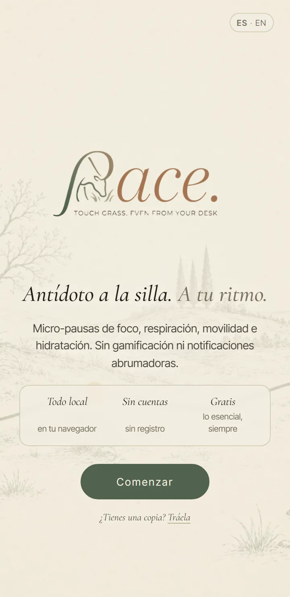<figcaption><b>8:52 · La bienvenida</b>Clara. Las tres líneas pequeñas no quedan a la misma altura. En la app dice «en tu móvil», no «en tu navegador». <i class="t bien">bien</i></figcaption></figure>
    <figure>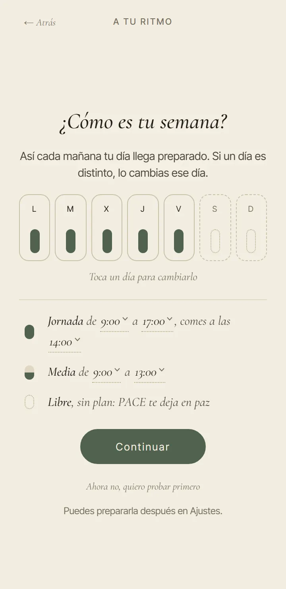<figcaption><b>Tu semana</b>Se entiende. «14:00» salta solo a otra línea; «Media» no dice «media jornada». <i class="t bien">bien</i></figcaption></figure>
    <figure><figcaption><b>PACE completo</b>«la carta del lunes» y «con el catálogo» solo los entiende quien ya conoce PACE. El botón vuelve a llamarse «Comenzar». <i class="t opinion">opinión</i></figcaption></figure>
    <figure>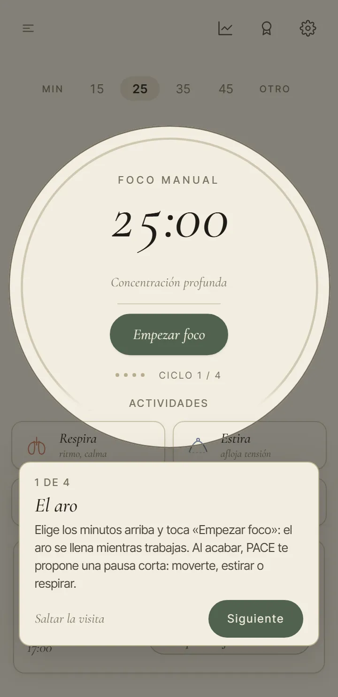<figcaption><b>Visita · 1 de 4</b>El círculo de luz deja Respira y Estira medio encendidos. <i class="t opinion">opinión</i></figcaption></figure>
    <figure>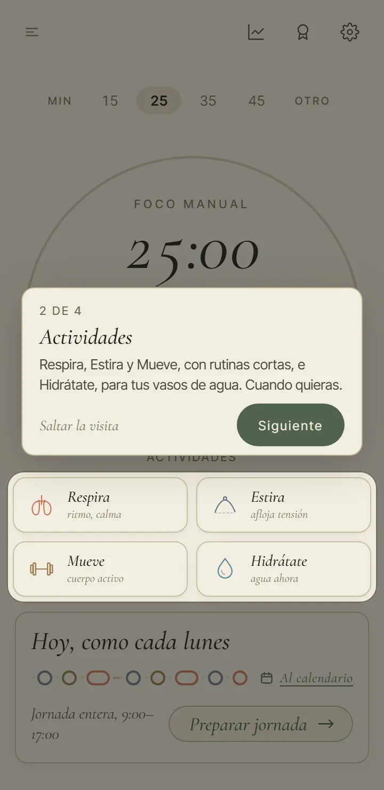<figcaption><b>Visita · 2 de 4</b>Bien. <i class="t bien">bien</i></figcaption></figure>
    <figure>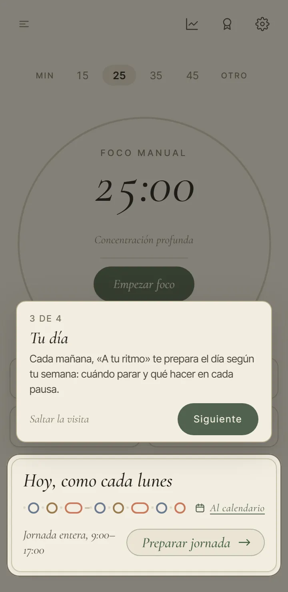<figcaption><b>Visita · 3 de 4</b>La tarjeta dice «Hoy, como cada lunes» el primer lunes. <i class="t opinion">opinión</i></figcaption></figure>
    <figure>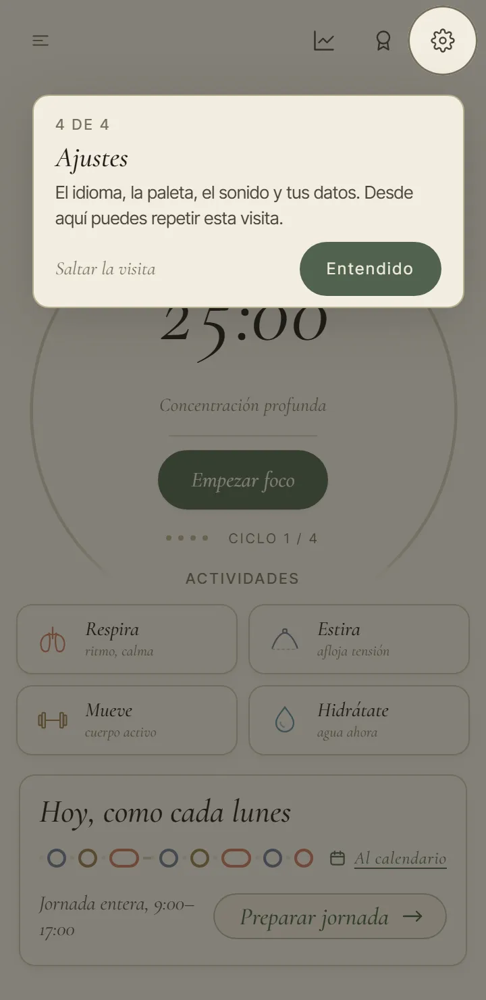<figcaption><b>Visita · 4 de 4</b>Bien. <i class="t bien">bien</i></figcaption></figure>
    <figure>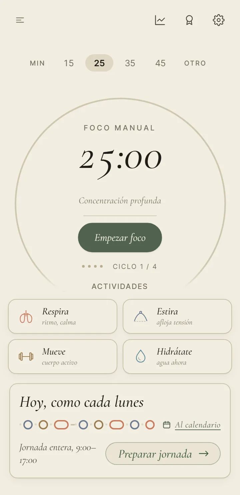<figcaption><b>La primera home</b>Dos llamadas a la vez: «Empezar foco» grande y «Preparar jornada». «FOCO MANUAL» es palabra de la casa. <i class="t opinion">opinión</i></figcaption></figure>
    <figure>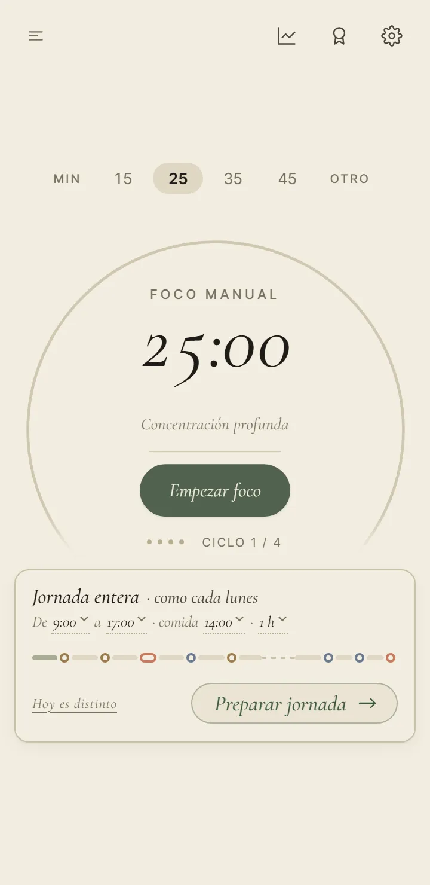<figcaption><b>«Preparar jornada»</b>No prepara: abre la tarjeta con otro «Preparar jornada». Las actividades se van y queda un hueco abajo. <i class="t opinion">opinión</i></figcaption></figure>
    <figure>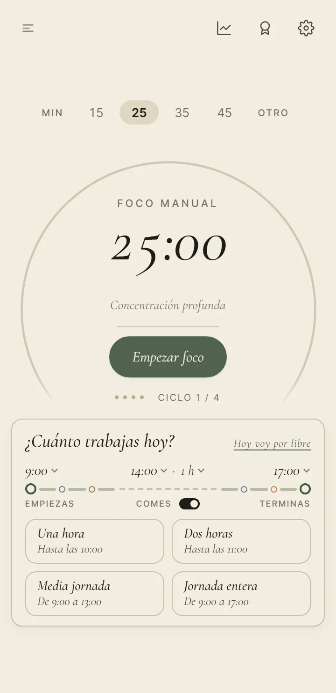<figcaption><b>«Hoy es distinto»</b>Lleva a «¿Cuánto trabajas hoy?»: clara, cuatro opciones. <i class="t bien">bien</i></figcaption></figure>
    <figure><figcaption><b>El día servido</b>«Hombros: sin mover hoy» se puede leer como «hoy no muevas los hombros». <i class="t opinion">opinión</i></figcaption></figure>
    <figure>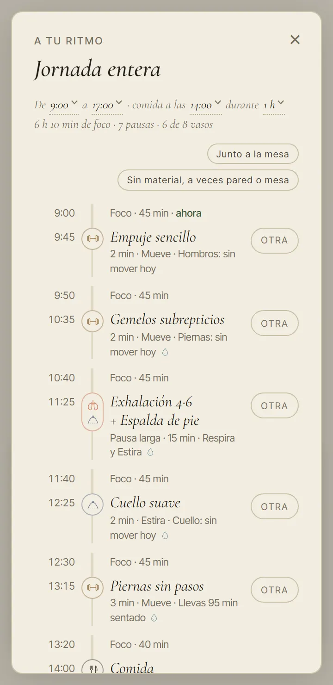<figcaption><b>«Ver todo»</b>«6 de 8 vasos» sin explicar. «Junto a la mesa» y «Sin material…» parecen botones y no lo son. <i class="t opinion">opinión</i></figcaption></figure>
    <figure>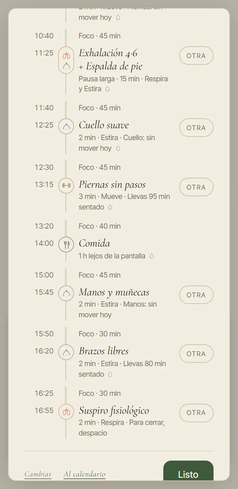<figcaption><b>Al final, «Al calendario»</b>Bien encontrado. <i class="t bien">bien</i></figcaption></figure>
    <figure>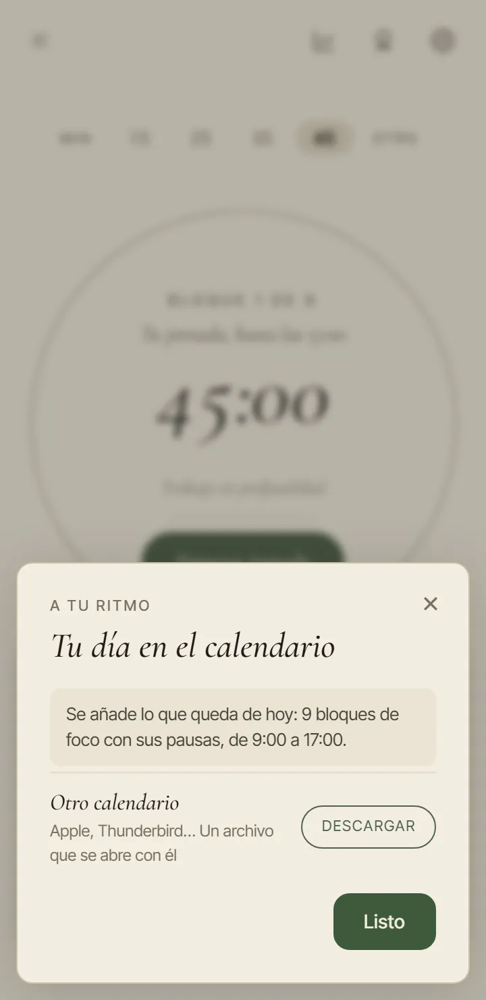<figcaption><b>El calendario, en la web</b>Dice «Se añade…» antes de descargar nada; solo da el archivo. En la app sale el calendario del móvil. <i class="t movil">móvil</i></figcaption></figure>
    <figure>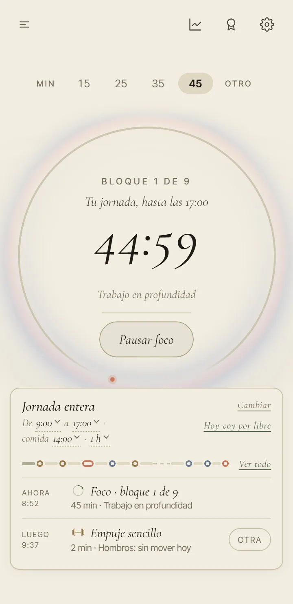<figcaption><b>8:52 · El primer Foco</b>Bien, con su campana. <i class="t bien">bien</i></figcaption></figure>
    <figure>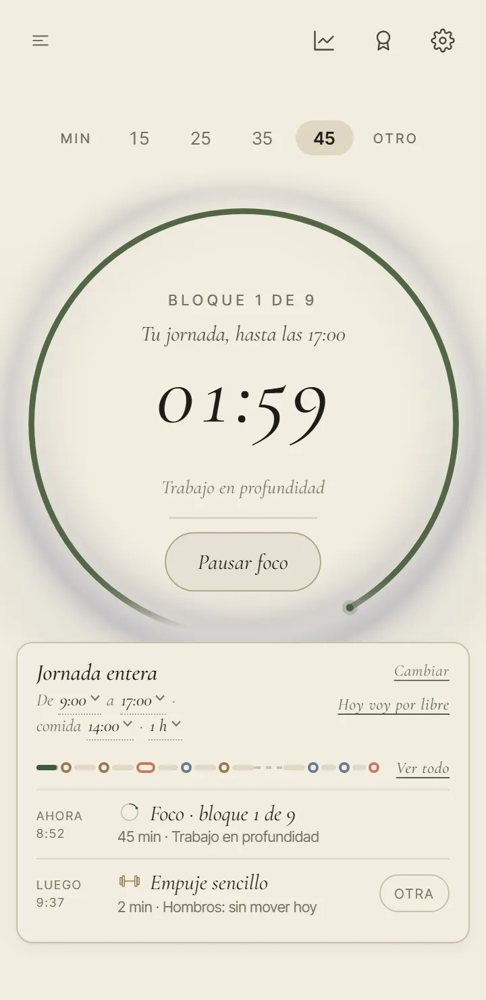<figcaption><b>9:35 · A punto</b>Bien. <i class="t bien">bien</i></figcaption></figure>
    <figure>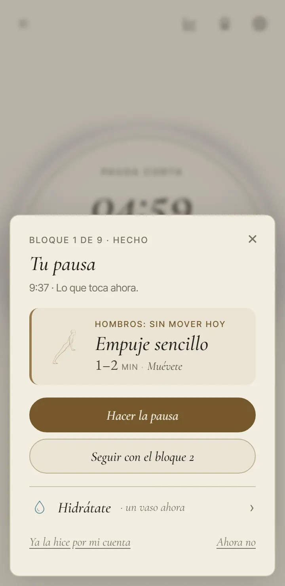<figcaption><b>9:37 · La primera pausa</b>Se entiende. «HOMBROS: SIN MOVER HOY», en mayúsculas encima de un ejercicio de hombros, suena a aviso. <i class="t opinion">opinión</i></figcaption></figure>
    <figure>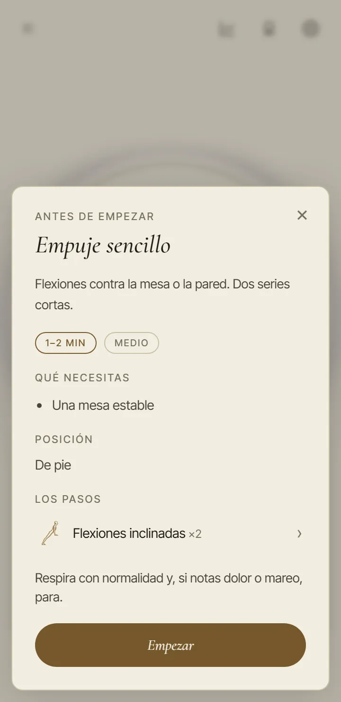<figcaption><b>«Hacer la pausa»</b>Abre una ficha con otro «Empezar»: dos toques para 1 o 2 minutos. <i class="t opinion">opinión</i></figcaption></figure>
    <figure>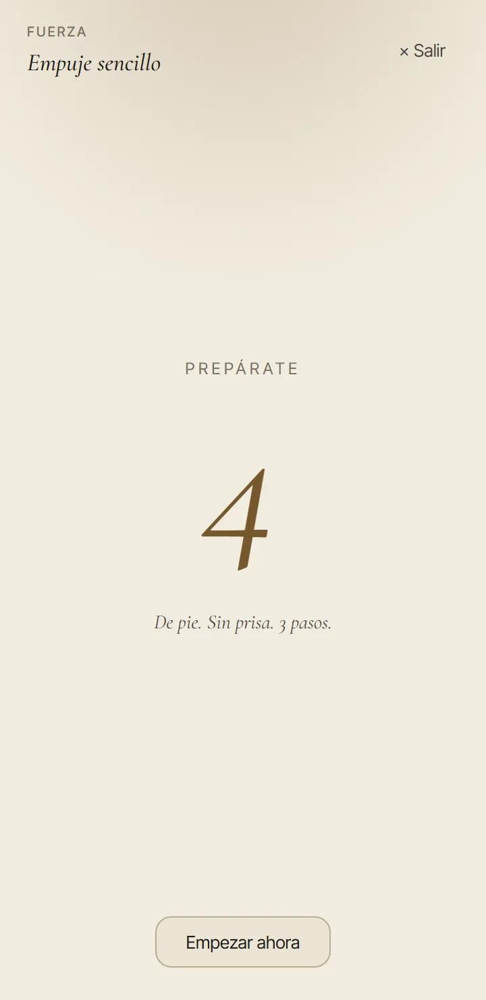<figcaption><b>Prepárate</b>«3 pasos», cuando la ficha decía un paso «×2». <i class="t fallo">fallo</i></figcaption></figure>
    <figure>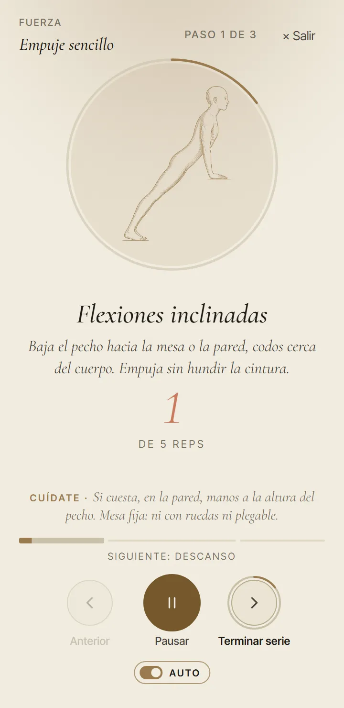<figcaption><b>El ejercicio</b>Claro, con su dibujo y su aviso. <i class="t bien">bien</i></figcaption></figure>
    <figure>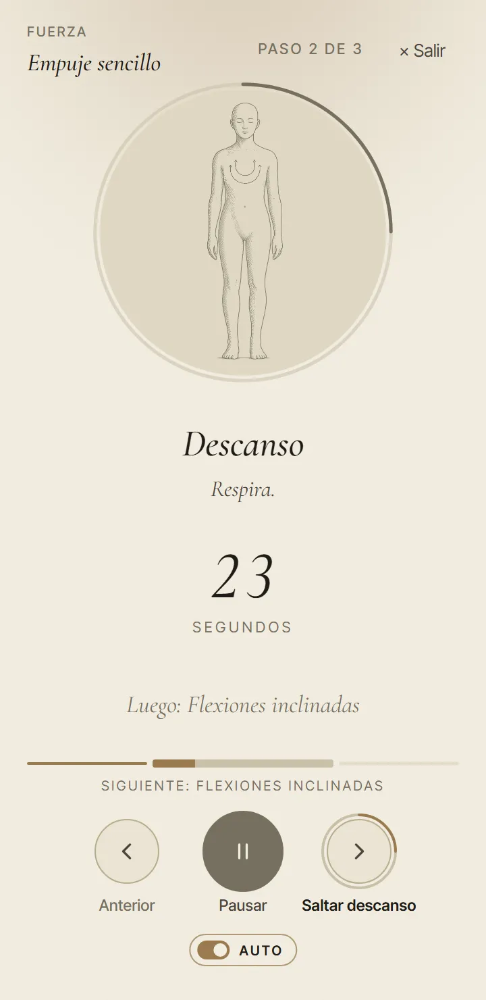<figcaption><b>Descanso</b>Bien. <i class="t bien">bien</i></figcaption></figure>
    <figure>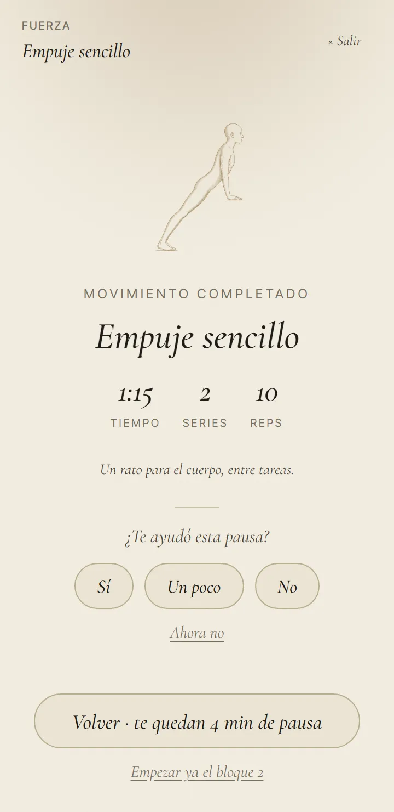<figcaption><b>9:38 · El cierre</b>«¿Te ayudó?» y «Volver · te quedan 4 min de pausa»: claro. <i class="t bien">bien</i></figcaption></figure>
    <figure>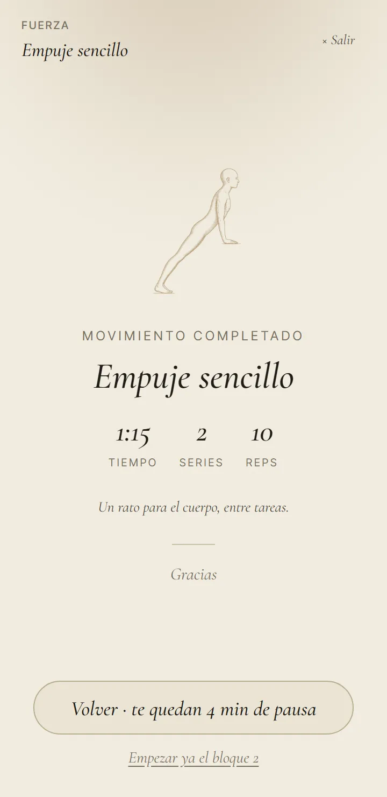<figcaption><b>«Sí»</b>«Gracias», y lo que sigue se queda. <i class="t bien">bien</i></figcaption></figure>
    <figure>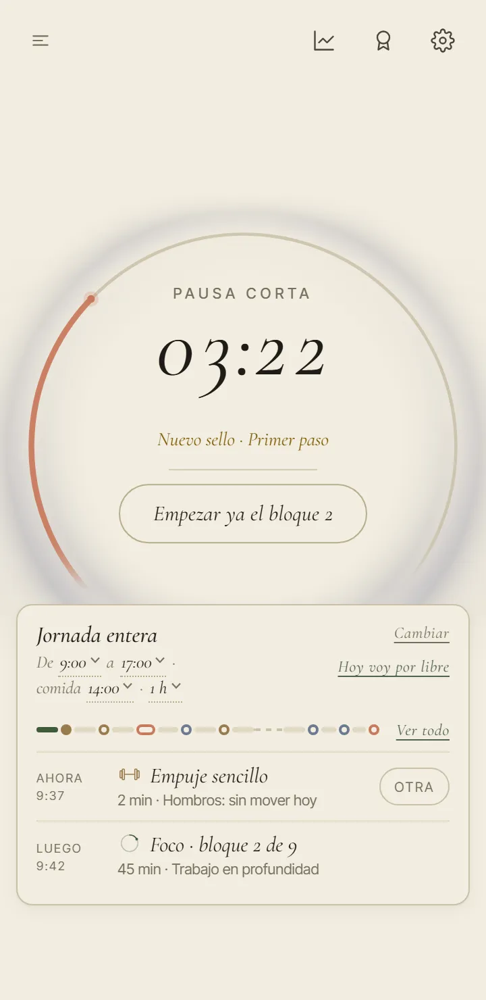<figcaption><b>De vuelta, con la pausa</b>«AHORA · Empuje sencillo · OTRA», como si no la hubiera hecho. <i class="t opinion">opinión</i></figcaption></figure>
    <figure>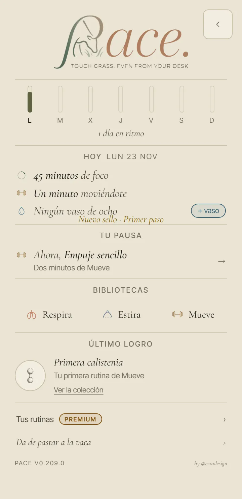<figcaption><b>El panel</b>«Nuevo sello · Primer paso» del aro se pinta encima, sobre la fila de los vasos. <i class="t fallo">fallo</i></figcaption></figure>
    <figure>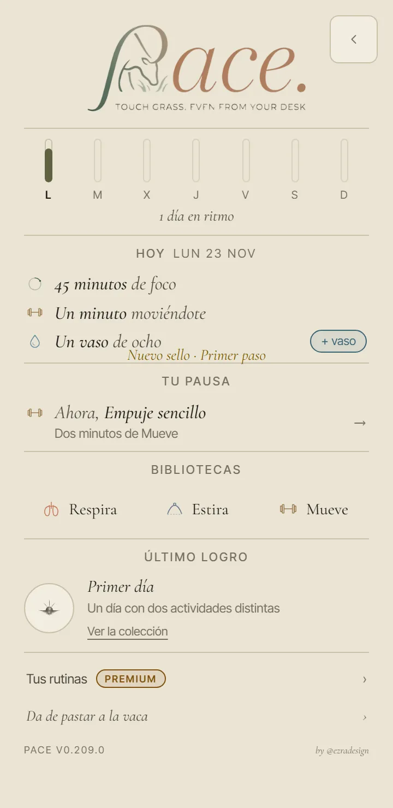<figcaption><b>«+ vaso»</b>Hidrátate solo está aquí con el día servido. Cuatro sellos con su campanita en diez segundos. <i class="t opinion">opinión</i></figcaption></figure>
    <figure>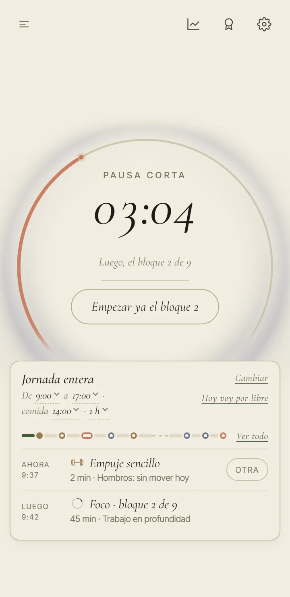<figcaption><b>Sellos en fila</b>Primer paso, Primera calistenia, Primer sorbo… uno tras otro en el aro. <i class="t opinion">opinión</i></figcaption></figure>
    <figure>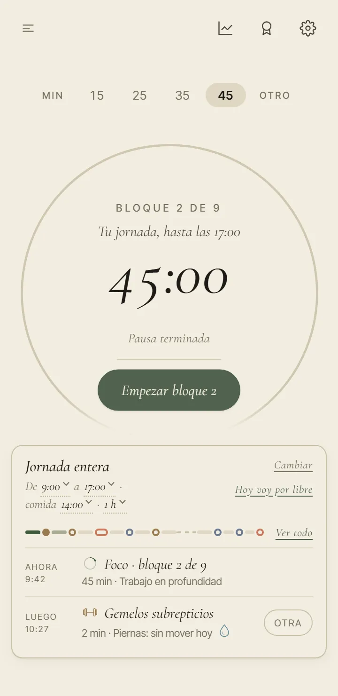<figcaption><b>9:42 · La pausa acaba</b>Espera a que toques «Empezar bloque 2»: bien. <i class="t bien">bien</i></figcaption></figure>
    <figure>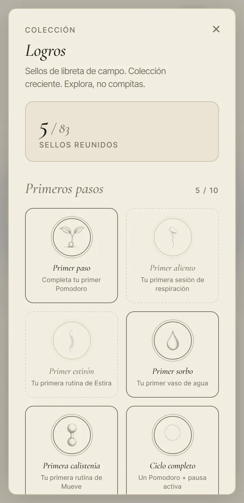<figcaption><b>Logros</b>«Completa tu primer Pomodoro», cuando la app dice Foco. Más abajo, «antes de las 9am», «SIT», «kriya». <i class="t fallo">fallo</i></figcaption></figure>
    <figure><figcaption><b>Ajustes</b>«Marca la fase» y «Suena detrás» no se entienden sin probar. Sale «Vibrar». El aviso de notificaciones bloqueadas lo pone este navegador de pruebas. <i class="t opinion">opinión</i></figcaption></figure>
    <figure>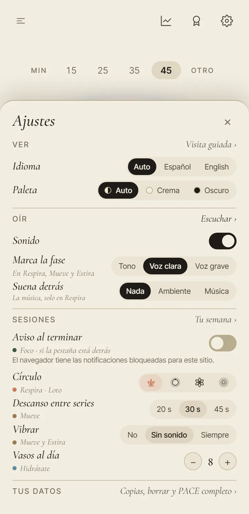<figcaption><b>«Escuchar ›»</b>Solo suena una muestra: la flecha promete abrir algo. <i class="t opinion">opinión</i></figcaption></figure>
    <figure>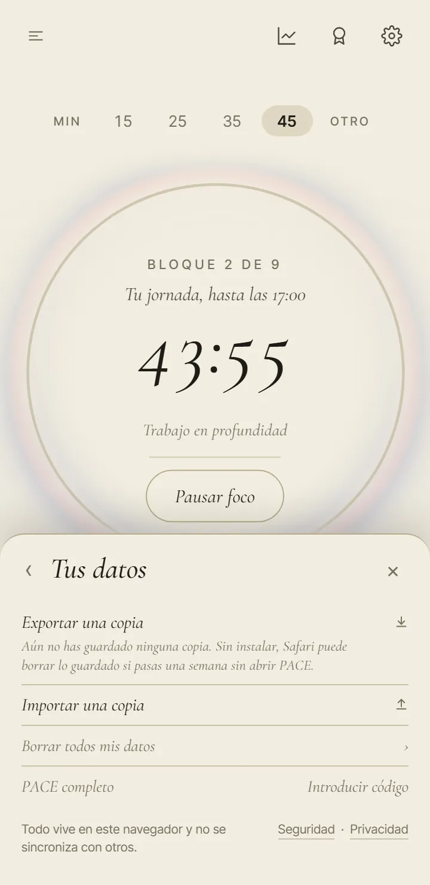<figcaption><b>Tus datos</b>En un Android dice «Safari puede borrar…» (tu A del 16 nov.; solo en la web). <i class="t opinion">opinión</i></figcaption></figure>
    <figure>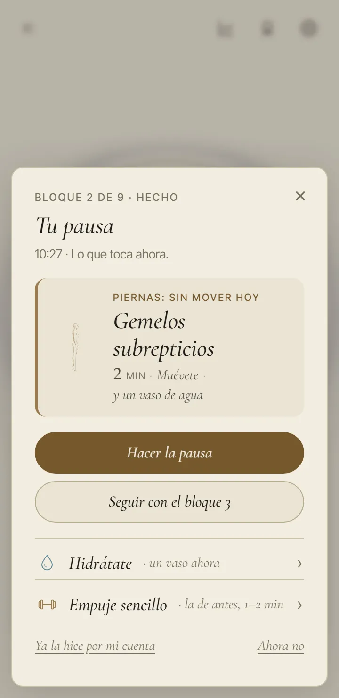<figcaption><b>10:27 · Segunda pausa</b>«Gemelos subrepticios»: nombre raro y dibujo fino y pequeño. «La de antes» aparece ya. <i class="t opinion">opinión</i></figcaption></figure>
    <figure>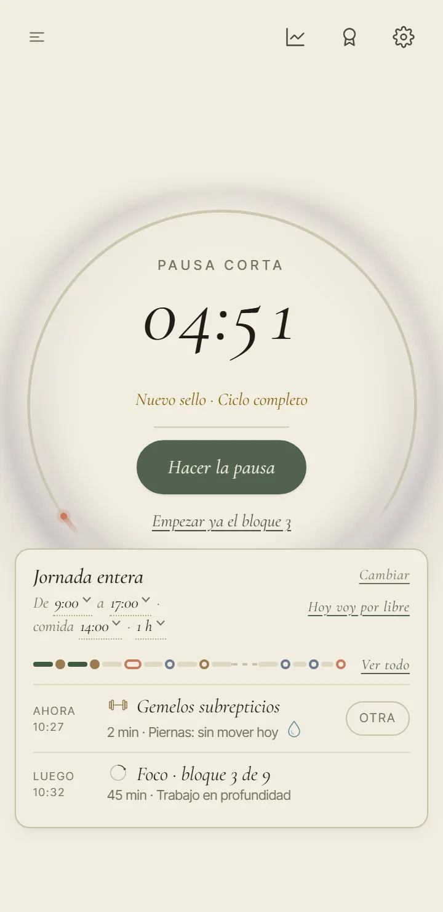<figcaption><b>«Ahora no»</b>Bien. Pero «Nuevo sello · Ciclo completo», ganado a las 9:37, llega ahora, encima de la campana. <i class="t fallo">fallo</i></figcaption></figure>
    <figure>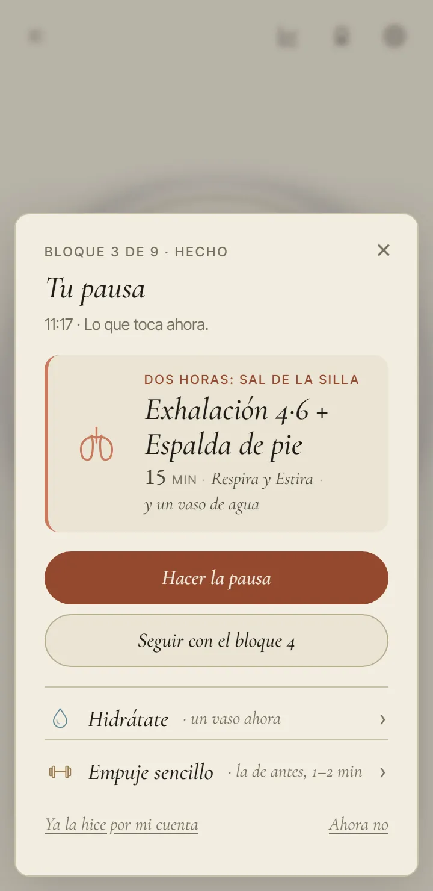<figcaption><b>11:17 · La pausa larga</b>«DOS HORAS: SAL DE LA SILLA»: el motivo es bueno. <i class="t bien">bien</i></figcaption></figure>
    <figure>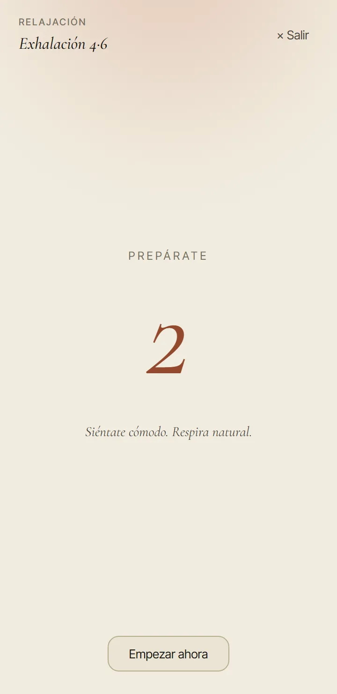<figcaption><b>Y lo primero…</b>«Siéntate cómodo. Respira natural.» Justo después de «sal de la silla». <i class="t fallo">fallo</i></figcaption></figure>
    <figure>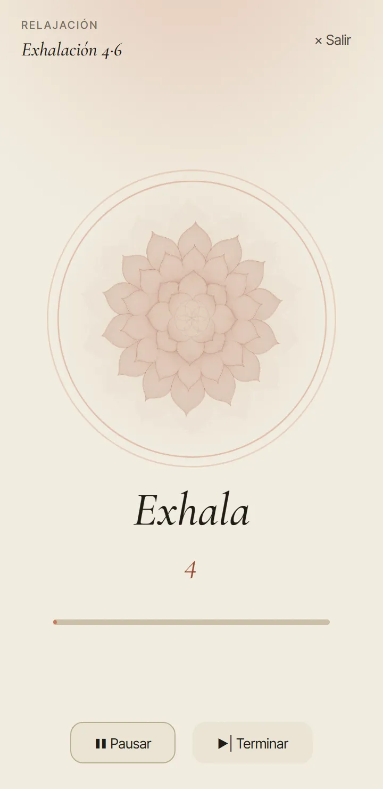<figcaption><b>Respira</b>Bonita; no dice cuánto dura (son 6 minutos). <i class="t opinion">opinión</i></figcaption></figure>
    <figure>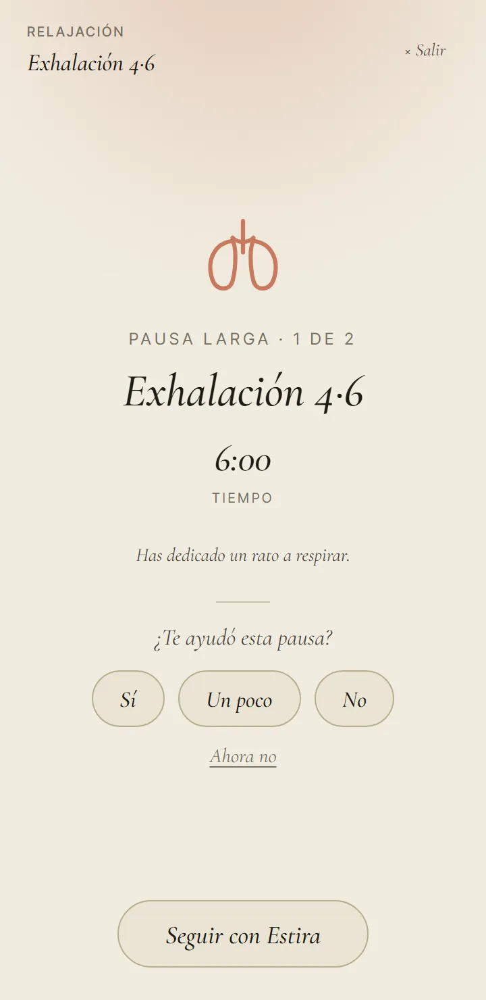<figcaption><b>«Pausa larga · 1 de 2»</b>Bien: dice qué sigue. <i class="t bien">bien</i></figcaption></figure>
    <figure>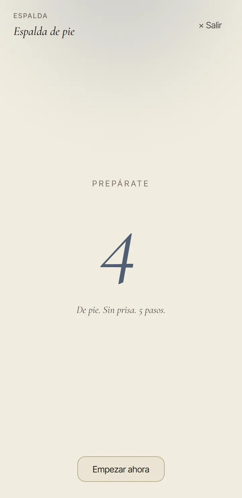<figcaption><b>Estira · Prepárate</b>«5 pasos»… <i class="t fallo">fallo</i></figcaption></figure>
    <figure>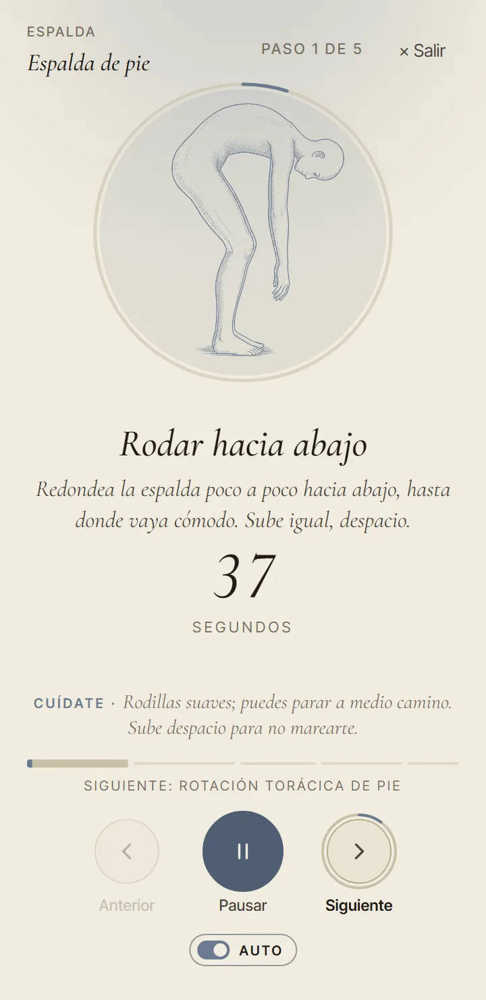<figcaption><b>Espalda de pie</b>Claro. <i class="t bien">bien</i></figcaption></figure>
    <figure>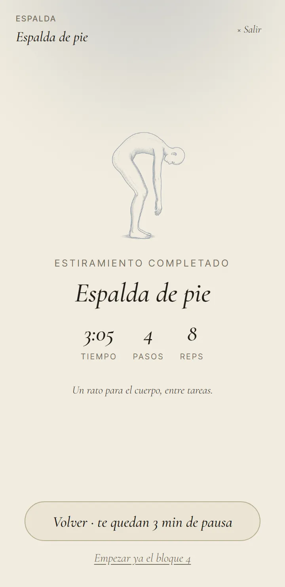<figcaption><b>11:28 · Hecho</b>…y aquí «4 PASOS». No pregunta otra vez «¿Te ayudó?»: bien. <i class="t fallo">fallo</i></figcaption></figure>
    <figure>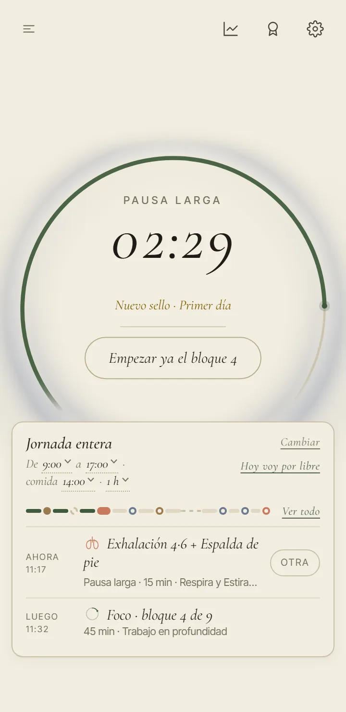<figcaption><b>11:30 · Cierra PACE</b>Se va a reuniones y a comer. <i class="t bien">bien</i></figcaption></figure>
  </div>

  <h2>Día 1 · tarde y noche</h2>
  <div class="tira" tabindex="0" aria-label="Lunes por la tarde y la noche">
    <figure>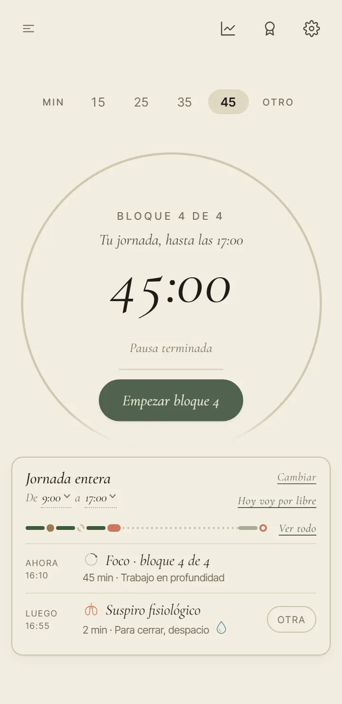<figcaption><b>16:10 · Vuelve</b>No regaña: bien. Pero «Pausa terminada» cuatro horas y media después, y «Bloque 4 de 4» cuando por la mañana era «de 9», sin decir por qué. <i class="t fallo">fallo</i></figcaption></figure>
    <figure>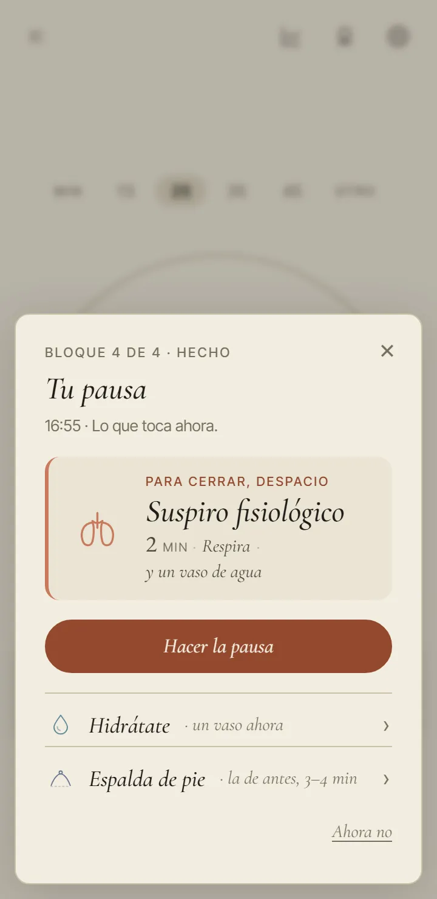<figcaption><b>16:55 · Para cerrar</b>Bien. <i class="t bien">bien</i></figcaption></figure>
    <figure>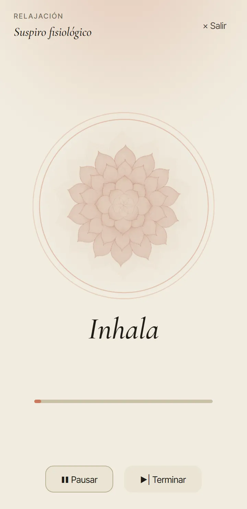<figcaption><b>Suspiro fisiológico</b>Bien. <i class="t bien">bien</i></figcaption></figure>
    <figure>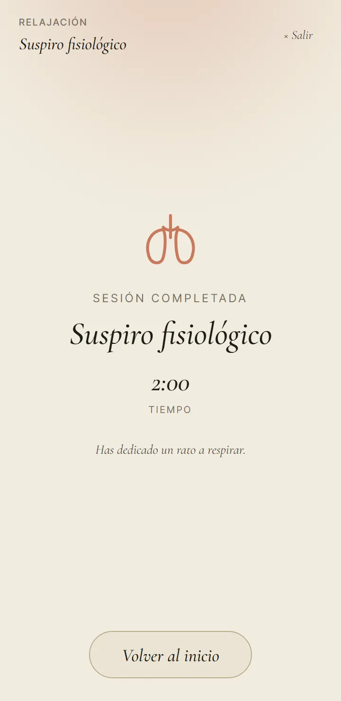<figcaption><b>16:57 · Hecho</b>Sin «¿Te ayudó?»: bien. <i class="t bien">bien</i></figcaption></figure>
    <figure>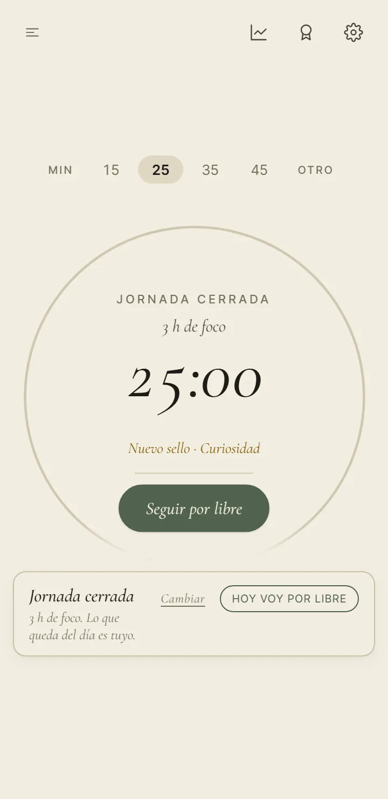<figcaption><b>16:58 · Jornada cerrada</b>«3 h de foco»: cierto. Suena «Nuevo sello · Curiosidad», por abrir Ajustes a las 9:43. «Seguir por libre» y «HOY VOY POR LIBRE» a la vez. <i class="t fallo">fallo</i></figcaption></figure>
    <figure>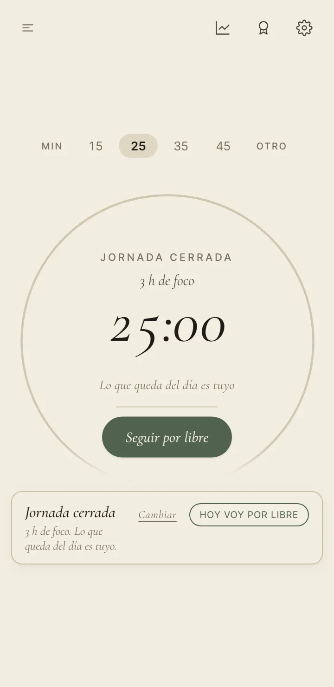<figcaption><b>21:30 · De noche</b>Ofrece un Foco y esconde las actividades: medio móvil vacío. «Lo que queda del día es tuyo», dos veces. <i class="t opinion">opinión</i></figcaption></figure>
  </div>

  <h2>Día 2 · martes</h2>
  <div class="tira" tabindex="0" aria-label="Martes">
    <figure>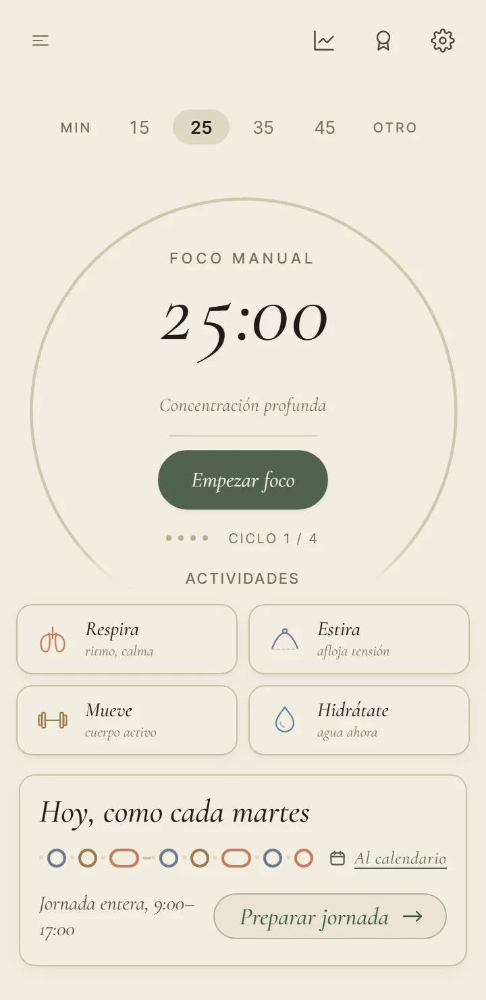<figcaption><b>8:45 · Abre</b>La misma home de la primera vez. <i class="t bien">bien</i></figcaption></figure>
    <figure><figcaption><b>Dos toques otra vez</b>Cada mañana, «Preparar jornada» y «Preparar jornada». <i class="t opinion">opinión</i></figcaption></figure>
    <figure>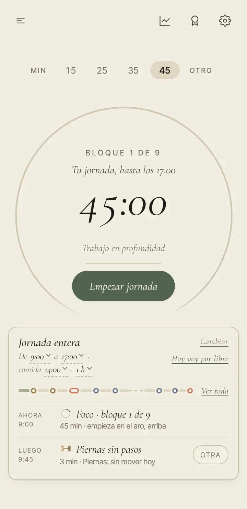<figcaption><b>El martes empieza por piernas</b>Es lo de ayer (el lunes se saltó Gemelos), pero nada lo dice: en toda la app no hay una línea con «ayer». <i class="t opinion">opinión</i></figcaption></figure>
    <figure>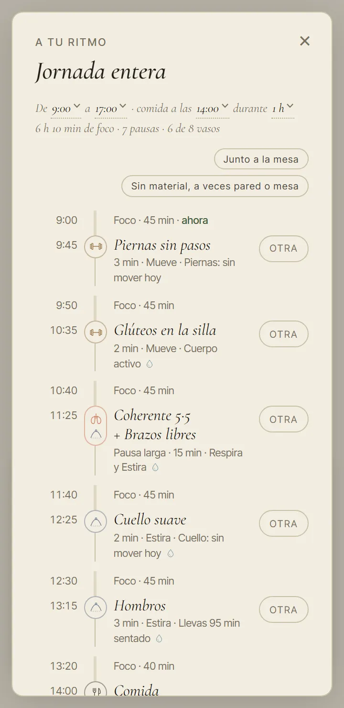<figcaption><b>«Ver todo»</b>Otro día distinto del lunes: Coherente 5·5, Hombros, Cadena posterior. <i class="t bien">bien</i></figcaption></figure>
    <figure>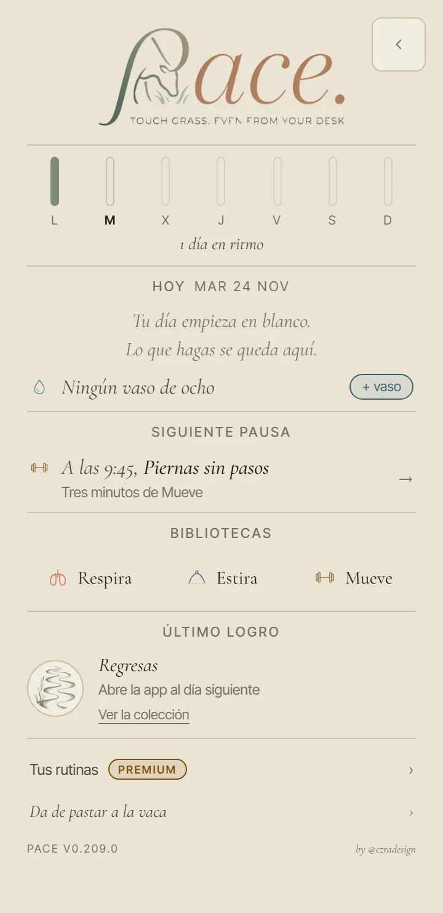<figcaption><b>El panel</b>«Tu día empieza en blanco. Lo que hagas se queda aquí.» Último logro, «Regresas», sin aviso. <i class="t bien">bien</i></figcaption></figure>
    <figure>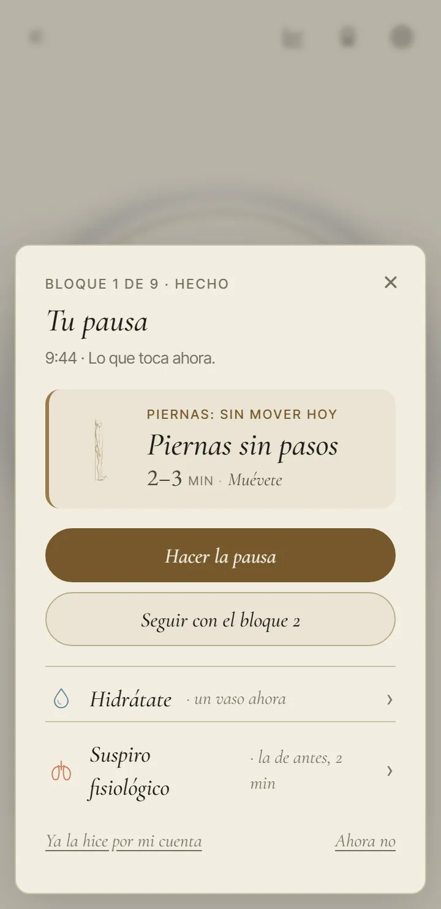<figcaption><b>9:44 · Primera pausa</b>«Suspiro fisiológico · la de antes»: la última que hizo, ayer. <i class="t bien">bien</i></figcaption></figure>
    <figure><figcaption><b>«Ya la hice por mi cuenta»</b>Sale «Larga sesión: cinco bloques de 45 min sin pausa», a quien ha hecho todas las pausas. <i class="t fallo">fallo</i></figcaption></figure>
    <figure><figcaption><b>10:34 · Segunda pausa</b>«Nuevo sello · Regresas», ganado a las 8:45. <i class="t fallo">fallo</i></figcaption></figure>
    <figure><figcaption><b>«OTRA»</b>Cambia en un toque: Glúteos en la silla → Escritorio express. <i class="t bien">bien</i></figcaption></figure>
    <figure><figcaption><b>10:37 · Hecho</b>La ficha decía «6 movimientos en la silla»; la lista y el cierre tienen 5. <i class="t fallo">fallo</i></figcaption></figure>
    <figure><figcaption><b>«No»</b>Explica qué pasará y pregunta por qué: bien. Los tres porqués miden 22 px de alto, difíciles de acertar. <i class="t fallo">fallo</i></figcaption></figure>
    <div class="solo"><b>17:40 · Vuelve sin cerrar</b><br>«Jornada cerrada · 1 h 30 min de foco. Lo que queda del día es tuyo.» Cierto y amable. (Sin foto: salió a medio aparecer; se ve como la de las 16:58.) En la app, en esas siete horas habrían sonado los avisos de cada pausa. <i class="t movil">móvil</i></div>
    <figure><figcaption><b>Estadísticas · Hoy</b>«10:34 · Manos y muñecas · hecha»: hizo Escritorio express. Lo guardado lo sabe; la vista vuelve a calcular el nombre. Las pausas que no hizo, con sus minutos. <i class="t fallo">fallo</i></figcaption></figure>
  </div>

  <h2>Día 3 · un miércoles sin nada, y el jueves</h2>
  <div class="tira" tabindex="0" aria-label="Miércoles y jueves">
    <figure><figcaption><b>Miércoles 12:30 · Solo mira</b>«Jornada entera, 12:30–17:00»: se ajusta a lo que queda. Cierra sin hacer nada. <i class="t bien">bien</i></figcaption></figure>
    <figure><figcaption><b>Jueves 8:50</b>Nada regaña. <i class="t bien">bien</i></figcaption></figure>
    <figure><figcaption><b>El panel</b>«1 día en ritmo» desaparece sin más; la semana se ve en las barras. <i class="t bien">bien</i></figcaption></figure>
    <figure><figcaption><b>El jueves</b>Vuelve a empezar por Empuje sencillo. En «Ver todo», «Coherente 432» no se entiende. <i class="t opinion">opinión</i></figcaption></figure>
    <figure><figcaption><b>Ajustes › Tu semana</b>Es la pantalla de la bienvenida: no enseña nada de lo aprendido. <i class="t opinion">opinión</i></figcaption></figure>
    <figure><figcaption><b>El lunes siguiente · La carta</b>«Te ayudó: Empuje sencillo · 4 de 17 pausas hechas · Sigue igual.» Clara. Arriba aparece el sobre. <i class="t bien">bien</i></figcaption></figure>
    <figure><figcaption><b>Tras «Vale»</b>La semana empieza de nuevo. <i class="t bien">bien</i></figcaption></figure>
  </div>

  <h2>En inglés, los momentos clave</h2>
  <div class="tira" tabindex="0" aria-label="En inglés">
    <figure><figcaption><b>Welcome</b>Bien. <i class="t bien">bien</i></figcaption></figure>
    <figure><figcaption><b>Your week</b>La comida, a las 12:30 en inglés: bien pensado. <i class="t bien">bien</i></figcaption></figure>
    <figure><figcaption><b>PACE Complete</b>«Start» dos veces seguidas, como en castellano. <i class="t opinion">opinión</i></figcaption></figure>
    <figure><figcaption><b>Tour</b>Bien. <i class="t bien">bien</i></figcaption></figure>
    <figure><figcaption><b>Home</b>«Plan my day»: mejor nombre que «Preparar jornada». <i class="t bien">bien</i></figcaption></figure>
    <figure><figcaption><b>Two taps</b>El mismo paso de más. <i class="t opinion">opinión</i></figcaption></figure>
    <figure><figcaption><b>The day</b>«Shoulders: unmoved today» se entiende mejor que «sin mover hoy». <i class="t bien">bien</i></figcaption></figure>
    <figure><figcaption><b>Your break</b>«I did it my own way» suena a canción; «I already did one». <i class="t opinion">opinión</i></figcaption></figure>
    <figure><figcaption><b>Before you start</b>Bien. <i class="t bien">bien</i></figcaption></figure>
    <figure><figcaption><b>Runner</b>Bien. <i class="t bien">bien</i></figcaption></figure>
    <figure><figcaption><b>Close</b>Bien. <i class="t bien">bien</i></figcaption></figure>
    <figure><figcaption><b>Back home</b>«New stamp · First step». <i class="t bien">bien</i></figcaption></figure>
    <figure><figcaption><b>Settings</b>Bien; «Phase cue» igual de oscuro que «Marca la fase». <i class="t opinion">opinión</i></figcaption></figure>
    <figure><figcaption><b>16:10 · Back</b>«Break over», horas después. <i class="t fallo">fallo</i></figcaption></figure>
    <figure><figcaption><b>17:40 · «Day complete»</b>Tras un solo bloque y siete horas fuera: «complete» suena a día cumplido. Y «Keep going freestyle» con «NO PLAN TODAY». <i class="t opinion">opinión</i></figcaption></figure>
  </div>

  <h2>A 360 × 640</h2>
  <div class="tira" tabindex="0" aria-label="A 360 por 640">
    <figure class="bajo"><figcaption><b>La home</b>Cabe. «CICLO 1 / 4» y «ACTIVIDADES» casi se tocan. <i class="t bien">bien</i></figcaption></figure>
    <figure class="bajo"><figcaption><b>Preparar</b>Cabe. <i class="t bien">bien</i></figcaption></figure>
    <figure class="bajo"><figcaption><b>El día</b>Cabe, sin scroll. <i class="t bien">bien</i></figcaption></figure>
    <figure class="bajo"><figcaption><b>La pausa</b>Cabe. <i class="t bien">bien</i></figcaption></figure>
    <figure class="bajo"><figcaption><b>La ficha</b>Cabe. Ajustes pide 12 px de scroll con «Vibrar»: ya lo lleva la rama de los textos largos. <i class="t bien">bien</i></figcaption></figure>
  </div>

  <h2>Solo se sabe en un móvil</h2>
  <p>Esto no se puede ver en un navegador de pruebas. Lo que hay que mirar con un Android y un iPhone de verdad, con la versión de prueba:</p>
  <ul class="lista">
    <li><strong>Los avisos de cada pausa</strong> con la app cerrada. El martes, el tester se fue a las 10:38 y volvió a las 17:40: ¿suenan los siete avisos de esas horas, o se juntan? ¿Y el del fin del Foco con el móvil bloqueado? <i class="t movil">móvil</i></li>
    <li><strong>El permiso de los avisos</strong> la primera vez (Android 13 o más y iPhone): en qué paso lo pide y si se entiende para qué. Y «Avisos a su hora ›» bajo «Pausar», solo en Android. <i class="t movil">móvil</i></li>
    <li><strong>La voz y los tics de Mueve y Estira.</strong> Apuntados, cada paso lleva tres tics antes de empezar y otros tres antes de «ya»: unos treinta en los tres minutos de Espalda de pie. Hay que oír si cansa. <i class="t movil">móvil</i></li>
    <li><strong>«Vibrar»</strong> sale de fábrica en «Sin sonido»: con el sonido puesto no vibra. Hay que notar si el tester lo echa de menos o lo encuentra. <i class="t movil">móvil</i></li>
    <li><strong>Los sellos.</strong> Cuatro campanitas en diez segundos se oyen distinto en un móvil sobre la mesa de la oficina. <i class="t movil">móvil</i></li>
    <li><strong>El calendario del móvil</strong> desde la tarjeta del día (aquí, en la web, solo el archivo). <i class="t movil">móvil</i></li>
  </ul>

  <h2>Todo lo apuntado</h2>
  <p>Gravedad: <strong>estorba</strong> (frena o confunde al usar PACE), <strong>se nota</strong> (un tester lo verá y quizá lo comente), <strong>detalle</strong> (pequeño). La propuesta es la mía; en las opiniones, la letra es tuya.</p>
  <div class="tabla" tabindex="0">
    <table>
      <thead><tr><th>#</th><th>Hallazgo</th><th>Gravedad</th><th>Tipo</th><th>Qué propongo</th></tr></thead>
      <tbody>
        <tr><td class="n">1</td><td>Estadísticas › Hoy nombra mal la pausa cambiada con «Otra»</td><td class="g">se nota</td><td><i class="t fallo">fallo</i></td><td>Leer el nombre de lo que se guardó de esa pausa, no recalcularlo con el plan de ahora.</td></tr>
        <tr><td class="n">2</td><td>Estadísticas lista las pausas no hechas con sus minutos, como las hechas</td><td class="g">se nota</td><td><i class="t opinion">opinión</i></td><td>Decir «no hecha» y quitar los minutos, sin atenuarlas.</td></tr>
        <tr><td class="n">3</td><td>Los sellos esperan al fin del Foco: llegan de 50 min a 7 h tarde</td><td class="g">se nota</td><td><i class="t fallo">fallo</i></td><td>Anunciarlos al ganarlos si no hay Foco en marcha; el que llegue tarde, sin campanita.</td></tr>
        <tr><td class="n">4</td><td>Cuatro sellos con campanita en diez segundos tras la primera pausa</td><td class="g">se nota</td><td><i class="t opinion">opinión</i></td><td>Una sola campanita y «3 sellos nuevos» en el aro.</td></tr>
        <tr><td class="n">5</td><td>El aviso del sello se pinta encima del panel lateral</td><td class="g">se nota</td><td><i class="t fallo">fallo</i></td><td>Que el panel lo tape (o esconderlo con el panel abierto).</td></tr>
        <tr><td class="n">6</td><td>«Preparar jornada» pide dos toques cada mañana</td><td class="g">estorba</td><td><i class="t opinion">opinión</i></td><td>Que el primero ya sirva el día; el horario se cambia luego con «Cambiar». Maqueta antes.</td></tr>
        <tr><td class="n">7</td><td>Con el día servido, la home pierde Respira, Estira, Mueve e Hidrátate, también de noche</td><td class="g">se nota</td><td><i class="t opinion">opinión</i></td><td>Maqueta: la fila de cuatro dibujos (como la B de la letra grande) o la rejilla de vuelta al cerrar la jornada.</td></tr>
        <tr><td class="n">8</td><td>«Siéntate cómodo» en la pausa que dice «Dos horas: sal de la silla»</td><td class="g">se nota</td><td><i class="t fallo">fallo</i></td><td>En esa pausa, Estira de pie primero, o «De pie o sentado» al preparar Respira.</td></tr>
        <tr><td class="n">9</td><td>«Hombros: sin mover hoy» se lee como una orden</td><td class="g">se nota</td><td><i class="t opinion">opinión</i></td><td>«Hombros: aún sin mover hoy».</td></tr>
        <tr><td class="n">10</td><td>«Lo de ayer» cambia el plan sin decirlo</td><td class="g">se nota</td><td><i class="t opinion">opinión</i></td><td>Una línea en la pausa: «Ayer no moviste las piernas».</td></tr>
        <tr><td class="n">11</td><td>Inglés: «Day complete» tras un solo bloque</td><td class="g">se nota</td><td><i class="t opinion">opinión</i></td><td>«Workday over», como «Jornada cerrada».</td></tr>
        <tr><td class="n">12</td><td>«Larga sesión: cinco bloques de 45 min sin pausa» cuenta bloques con pausas</td><td class="g">detalle</td><td><i class="t fallo">fallo</i></td><td>«Cinco bloques de 45 minutos», y en inglés igual.</td></tr>
        <tr><td class="n">13</td><td>Escritorio express: «6 movimientos» y son 5</td><td class="g">detalle</td><td><i class="t fallo">fallo</i></td><td>«5 movimientos».</td></tr>
        <tr><td class="n">14</td><td>«N pasos» al prepararse y otro número en el cierre (3 y 2, 5 y 4)</td><td class="g">detalle</td><td><i class="t fallo">fallo</i></td><td>Contar lo mismo en los dos: los ejercicios, sin los descansos.</td></tr>
        <tr><td class="n">15</td><td>«Pausa terminada» y «Break over» horas después</td><td class="g">detalle</td><td><i class="t fallo">fallo</i></td><td>Pasado un rato, la línea de siempre («Trabajo en profundidad»).</td></tr>
        <tr><td class="n">16</td><td>«Bloque 4 de 4» por la tarde, cuando por la mañana era «de 9»</td><td class="g">detalle</td><td><i class="t opinion">opinión</i></td><td>Dejarlo; si molesta, «Último bloque».</td></tr>
        <tr><td class="n">17</td><td>Logros: «tu primer Pomodoro», «antes de las 9am», «SIT», «con pace»</td><td class="g">detalle</td><td><i class="t fallo">fallo</i></td><td>«tu primer Foco», «antes de las 9:00», «50 rutinas de Estira en la silla» (SIT es la etiqueta interna), «PACE».</td></tr>
        <tr><td class="n">18</td><td>Los porqués del «No» miden 22 px de alto</td><td class="g">detalle</td><td><i class="t fallo">fallo</i></td><td>Zona de toque de 44 px, con el mismo aspecto.</td></tr>
        <tr><td class="n">19</td><td>Jornada cerrada: «Seguir por libre» y «HOY VOY POR LIBRE» a la vez</td><td class="g">detalle</td><td><i class="t opinion">opinión</i></td><td>Dejar solo el del aro.</td></tr>
        <tr><td class="n">20</td><td>«Hoy, como cada lunes» el primer lunes</td><td class="g">detalle</td><td><i class="t opinion">opinión</i></td><td>«Hoy, lunes» la primera semana.</td></tr>
        <tr><td class="n">21</td><td>Bienvenida: «la carta del lunes», «con el catálogo»</td><td class="g">detalle</td><td><i class="t opinion">opinión</i></td><td>«cada lunes, tu semana ajustada», «con los ejercicios de PACE».</td></tr>
        <tr><td class="n">22</td><td>Ajustes: «Marca la fase», «Suena detrás», «Escuchar ›»</td><td class="g">detalle</td><td><i class="t opinion">opinión</i></td><td>La línea pequeña que lo diga: «La voz que cuenta las fases», «Lo que suena mientras respiras».</td></tr>
        <tr><td class="n">23</td><td>Inglés: «I did it my own way», «Keep going freestyle»</td><td class="g">detalle</td><td><i class="t opinion">opinión</i></td><td>«I already did one», «Keep going».</td></tr>
        <tr><td class="n">24</td><td>«Ver todo»: «Junto a la mesa» y «Sin material» parecen botones; «6 de 8 vasos»</td><td class="g">detalle</td><td><i class="t opinion">opinión</i></td><td>Texto sin borde; «6 vasos en la jornada».</td></tr>
        <tr><td class="n">25</td><td>Nombres que no se entienden: «Coherente 432», «Gemelos subrepticios», «FOCO MANUAL»</td><td class="g">detalle</td><td><i class="t opinion">opinión</i></td><td>Revisarlos con CONTENT.md en la próxima pasada de textos.</td></tr>
        <tr><td class="n">26</td><td>Calendario en la web: «Se añade…» antes de descargar</td><td class="g">detalle</td><td><i class="t opinion">opinión</i></td><td>«Descarga tu día y ábrelo con tu calendario».</td></tr>
      </tbody>
    </table>
  </div>

  <h3>Cómo se ha hecho</h3>
  <p class="nota">La app compilada (<code>node build-standalone.js</code>) de la 0.210.0; las fotos del día 1 llevan «v0.209.0» en el panel, que es el mismo código. El conductor, <code>conduce.js</code> en esta carpeta, sirve el <code>index.html</code> en el puerto 8915 y deja un Android con Chrome abierto: toca con el dedo, para el reloj y lo mueve a mano, cierra y abre PACE horas después con lo guardado, y apunta cada sonido, voz, vibración y aviso con su hora. Las órdenes de este recorrido están en <code>pasos.jsonl</code> y las notas de cada foto en <code>notas.md</code>. El aviso de «notificaciones bloqueadas» de Ajustes es de ese navegador sin pantalla, no de un móvil.</p>
</main>
